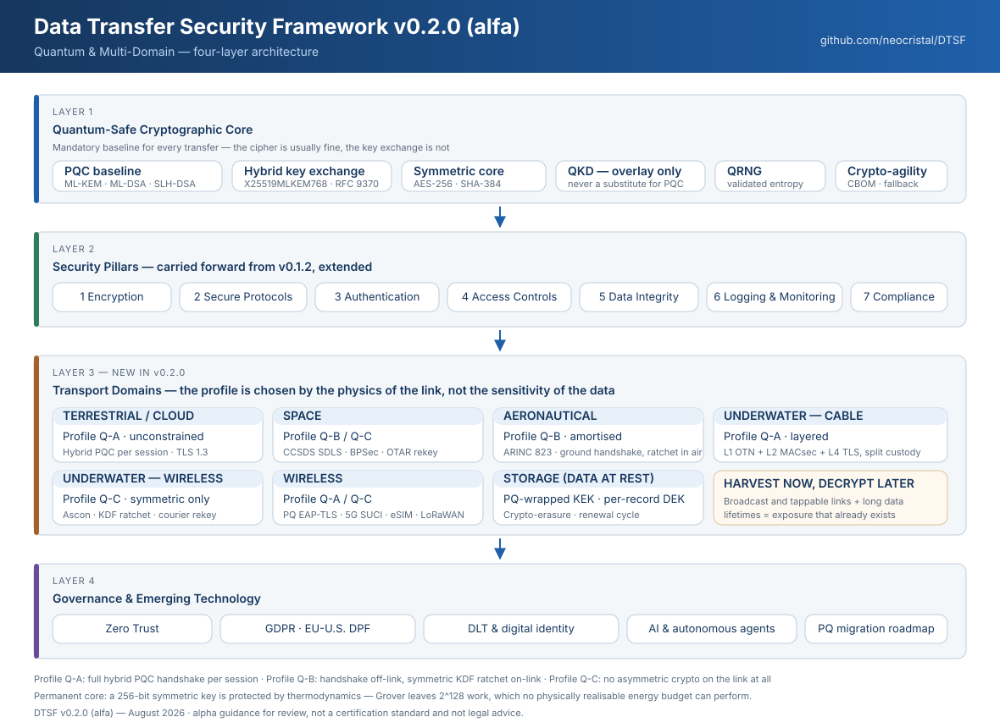

The framework in one page
DTSF v0.2.0 keeps the seven security pillars of v0.1.2 and adds a quantum-safe cryptographic core beneath them and a transport-domain layer above them. The organising insight: the achievable security architecture is decided by the physics of the link, not by the sensitivity of the data.
Why this version exists
Asymmetric crypto is replaced
RSA, Diffie-Hellman, ECDH, ECDSA and EdDSA fall in polynomial time. This is replacement, not hardening.
Symmetric crypto is doubled
A quadratic speed-up only. AES-256 leaves a 2128 workload — beyond any physically realisable energy budget.
The exposure already exists
Traffic recorded today from a cable, satellite or radio link is decrypted when a quantum computer arrives.
Architecture

The three cryptographic profiles
Choose by link, not by data. Standard post-quantum cryptography assumes an IP network with kilobit-to-gigabit capacity; three DTSF domains violate that assumption outright.
Unconstrained
Full hybrid handshake per session.
- X25519 + ML-KEM-768
- ML-DSA-65 certificates
- AES-256-GCM
- Subsea cable, cloud, ground segment, enterprise Wi-Fi, broadband SATCOM
Amortised
Handshake off-link and rarely; ratchet on-link.
- Root established on the ground or over broadband
- Kn+1 = KDF(Kn, context)
- Symmetric MAC per message
- ACARS/VDL2, HFDL, spacecraft operations
Symmetric only
No asymmetric operation crosses the link.
- Physically injected 256-bit roots
- Ascon-AEAD128 or AES-256-GCM
- Courier / UUV rekey, tamper zeroisation
- Underwater acoustic, deep space, legacy embedded
The arithmetic behind the split
Time to transmit a single ML-KEM-768 ciphertext (1 088 bytes = 8 704 bits).
| Link | Typical rate | Time | Verdict | Profile |
|---|---|---|---|---|
| Subsea fibre (repeatered) | 10–400 Gbit/s per λ | negligible | No constraint | Q-A |
| LEO/GEO Ka-band downlink | 10 Mbit/s – 1 Gbit/s | negligible | No constraint | Q-A |
| Aeronautical SATCOM | 20–700 kbit/s | 12–435 ms | Acceptable | Q-A |
| VDL Mode 2 (shared) | 31.5 kbit/s | ~0.3 s of whole channel | Constrained | Q-B |
| Spacecraft telecommand | 2 kbit/s | ~4.4 s, spans 2 TC frames | Constrained | Q-B |
| HF datalink (HFDL) | 300–1 800 bit/s | 5–29 s | Severely constrained | Q-B / Q-C |
| Underwater acoustic | 80 bit/s – 5 kbit/s | 1.7 s – 109 s | Infeasible per session | Q-C |
Transport domains
Select a domain to see its threat model, standards baseline and quantum-safe design.
Algorithm reference
Standardised post-quantum algorithms, their sizes, and the quantum status of the classical ones they replace. Filter by name, family or use.
| Algorithm | Standard | Family | Function | Key / signature size | Status |
|---|
Control catalogue
Every enumerated control across the v0.2.0 domain documents.
Migration
Post-quantum migration is an inventory and dependency project with a cryptographic conclusion. Organisations fail because they never establish where their cryptography lives.
Where the effort actually goes
| Phase | Share of effort |
|---|---|
| Discovery and inventory | 40 % |
| Prioritisation and planning | 10 % |
| Vendor and supply-chain pressure | 20 % |
| Actual algorithm replacement | 20 % |
| Validation and evidence | 10 % |
Regulatory deadlines
Quick wins — value before the hard work
Configuration-level
- Hybrid TLS (X25519MLKEM768) on external endpoints
- RFC 8784 post-quantum PSKs on existing IKEv2 VPNs
- SSH
mlkem768x25519-sha256 - Hybrid EAP-TLS 1.3 for enterprise Wi-Fi
Policy-level
- Move code signing to SLH-DSA or LMS/XMSS
- Raise baselines to AES-256 and SHA-384
- Shorten certificate lifetimes so classical certs age out
- No new system goes live with RSA/ECC-only key establishment
Governance & emerging technology
Distributed ledgers in government and society
The one-sentence test: if you do not need multiple mutually distrusting parties to agree on an append-only history none of them can silently rewrite, you need a signed audit log — cheaper, faster and easier to make lawful.
| GDPR requirement | Conflict | Resolution |
|---|---|---|
| Art. 17 — erasure | Immutability is the point | Never put personal data on-chain; salted commitments only, erase by destroying the salt |
| Art. 16 — rectification | History cannot be altered | Append a correcting entry; the ledger shows the trail |
| Art. 4(7) — controllership | Many nodes, no obvious controller | Consortium agreement naming joint controllers (Art. 26) |
| Chapter V — transfers | Every node worldwide gets a copy | Restrict validator jurisdictions, or nothing personal on-chain |
| Art. 22 — automated decisions | Smart contracts decide | Human review path for legal-effect decisions |
AI, agents and machine-generated code
Machine identity
An agent must have its own identity and must never act using a human's credentials.
- Short-lived, attenuated, purpose-bound credentials
- On-behalf-of provenance on every downstream call
- Independent revocation of agent and user
- Without this, no DPA request can be answered
Prompt injection
Not a bug awaiting a patch — a consequence of mixing instructions and data in one channel.
- Capability scoping in the tool layer, never in prompts
- Agents reading untrusted content hold no privileged credentials
- Model output is untrusted input to whatever consumes it
- Egress allow-lists and human gates on irreversible actions
Research horizons — the credibility scale
| Tier | Meaning | Examples | Planning treatment |
|---|---|---|---|
| T1 | Physical law | Relativistic latency, no-cloning, Landauer, Shannon, Holevo | Design against it — permanent |
| T2 | Engineering limit | CRQC, quantum repeaters, practical FHE, device-independent QKD | Hedge with crypto-agility |
| T3 | Open hypothesis | Gravitational position attestation, physical-layer key generation | Monitor; do not plan around |
| T4 | Unfounded claim | Gravitational-wave comms, FTL entanglement signalling | Reject — recognise procurement fraud |